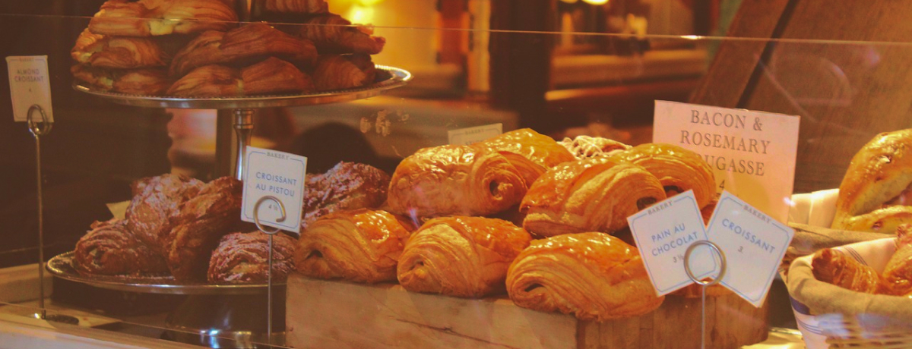

home > 사업소개 > 회사소개
뚜레쥬르 소개
매일매일(Tous Les Jours),
매장에서 직접 굽는 신선한 베이커리
뚜레쥬르(Tous Les Jours)는 프랑스어로 ‘매일매일’이라는 뜻으로
그 이름의 의미처럼 매일매일 매장에서 직접 굽는 신선함을 가장 큰 가치로 하는 베이커리 입니다.

- 갓 구운 신선함이 매장을 가득 채웁니다
- 오븐에서 방금 꺼낸 빵이 가장 맛있다는 것을 알기에, 뚜레쥬르는 지금도 더욱 따뜻하고 촉촉한 갓 구운 빵을 제공하기 위해 끊임없이 노력합니다. 매장에서 직접 굽는 것에 그치지 않고, 언제라도 따끈한 빵을 만날 수 있게 더욱 자주 굽고, 고객들이 필요한 시간에 맞춰 굽는 등 세심하고 배려가 담긴 서비스도 준비하고 있습니다. 갓 구워낸 빵은 고소한 향기와 따스한 온기로 매장을 가득 채우고, 고객들에게는 가장 맛있는 빵을 맛보는 행복을 선물합니다.
- 선별된 좋은 재료를 사용하여
더욱 건강한 제품을 제공하고자 합니다 - 소중한 가족과 이웃에게 드리는 빵이기에, 뚜레쥬르의 빵과 케이크는 들어가는 모든 재료를 하나 하나 꼼꼼히 선별해서 사용합니다. 빵에 가장 많이 쓰이는 우유와 치즈를 유기농 우유, 자연치즈로 바꿔보기도 하고, 각 지역의 싱싱한 제철 식재와 과일 등 자연의 기운을 담은 순수한 재료를 사용하는 등. 항상 좋은 재료가 기본이 되는 건강하고 정직한 빵과 케이크를 만들고자 노력 합니다. 뚜레쥬르의 빵과 케이크는 들어가는 모든 재료를 하나 하나 꼼꼼히 선별해서 사용합니다. 빵에 가장 많이 쓰이는 우유와 치즈를 유기농 우유, 자연치즈로 바꿔보기도 하고, 각 지역의 싱싱한 제철 식재와 과일 등 자연의 기운을 담은 순수한 재료를 사용하는 등. 항상 좋은 재료가 기본이 되는 건강하고 정직한 빵과 케이크를 만들고자 노력 합니다.
- 좋은 밀가루를 만드는 회사의 베이커리 브랜드
- 좋은 밀가루도 좋은 빵의 맛을 내는 중요한 요소입니다. 뚜레쥬르는 CJ제일제당의 깐깐한 60년 제분 기술 노하우가 축적된 밀가루로 빵을 만드는 베이커리 입니다. 뚜레쥬르와 CJ제일제당은 오랜 노력 끝에 베이커리 전용 맞춤 밀가루, ‘온리원(OnlyOne)’을 개발하여, 개성있는 최적의 빵 맛을 구현하고자 하였습니다. 식빵은 더욱 부드럽고 촉촉하게, 페이스트리 류는 더욱 가볍고 바삭하게. 다양한 맞춤 밀가루는 빵마다의 개성 있는 식감을 살려주고 장시간 동안 그 부드러움이 유지되며, 더 깊은 빵의 풍미를 즐길 수 있도록 합니다.
- 본질을 지키는 것은 기본,
더 나아가 혁신적인 변화로 업계를 선도합니다 - 매일매일, 하루 3번 매장에서 직접 빵을 굽는 일.
다른 베이커리에서 쉽게 도전하지 못했던 혁신적인 시도로 베이커리 시장에 첫 발을 내딛었습니다. 그 동안 뚜레쥬르는 혁신적인 운영방식 뿐 아니라 베이커리 전용 맞춤 밀가루를 개발하는 등 최고의 맛을 향한 열정과 베이커리 시장선도의 사명을 가지고 진화해왔습니다. 앞으로도 뚜레쥬르는 고객과 감동시키는 새롭고 혁신적인 변화를 위해 끊임없이 노력하겠습니다.